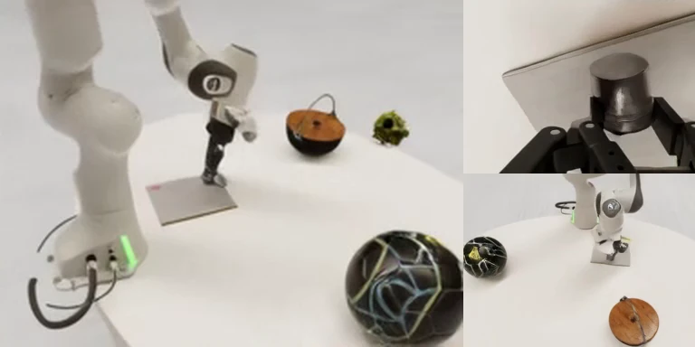
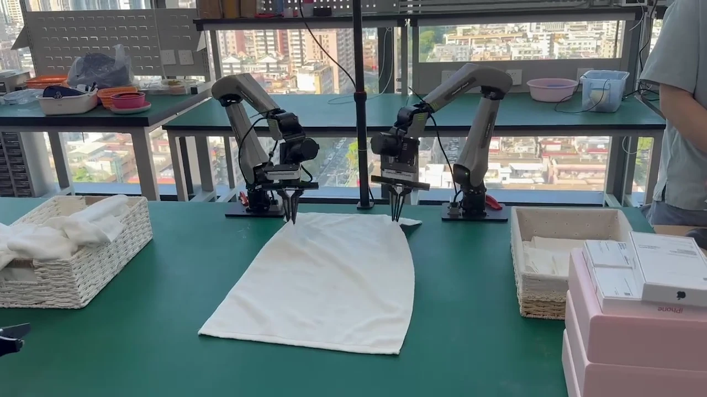

Three-view prediction
PrimeBot Research2026 · Preprint
PrimeSim
A Generalist World Model Simulator from Large-Scale Cross-Embodiment Demonstrations
Given a robot’s actions, PrimeSim predicts what happens next across three synchronized camera views. It was trained on 30,110 hours of demonstrations from 22 robot platforms.
Authors
Travis Davies, Wentao Ma, Lihao Guo, Tengfei Ma, Xiaowen Chang, Jiafeng Xu, Shilong Wang, Yiqi Deng, Shaowen He, Xiaoqi Li, Qian Zhu, Ran Cheng, Hao Dong

Real-robot demonstration
Lumos Robotics2026 · Preprint
PRIME W0
Physical Priors from World Models for Embodied Manipulation
PRIME W0 uses a world model to predict a visual subgoal. The policy combines that prediction with the robot’s recent observations to choose its next action.
Authors
Huabin Peng, Fagang Jin, Yancong Wei, Tengfei Ma, Chuhang Liu, Chao Yu, Liqing Chen